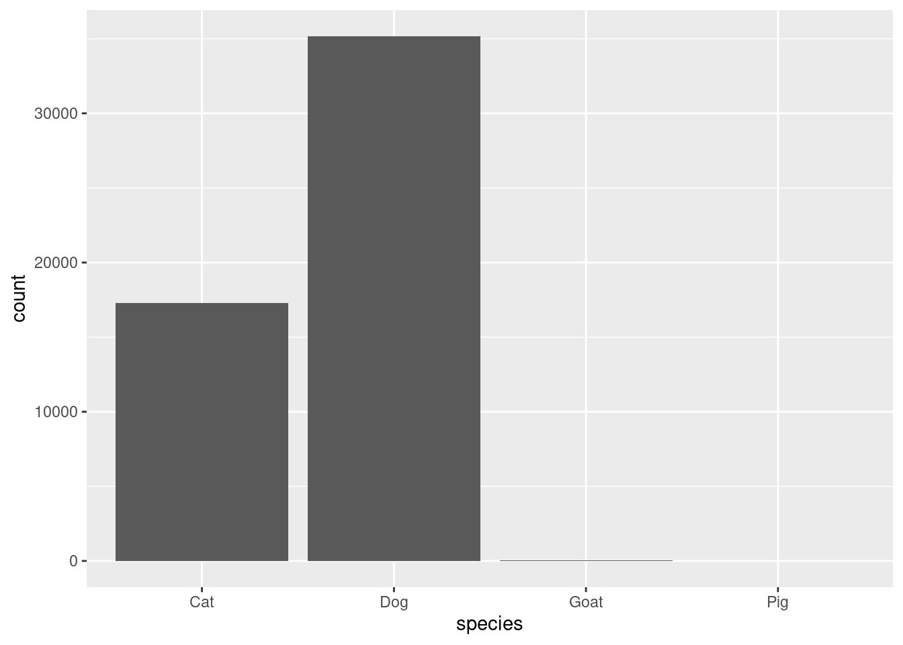
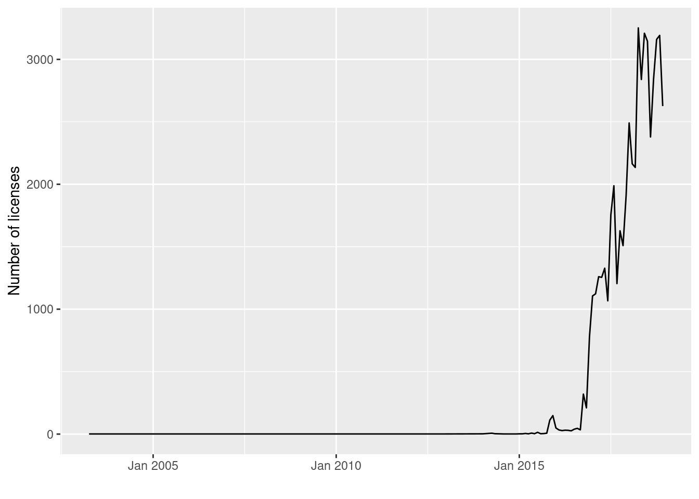
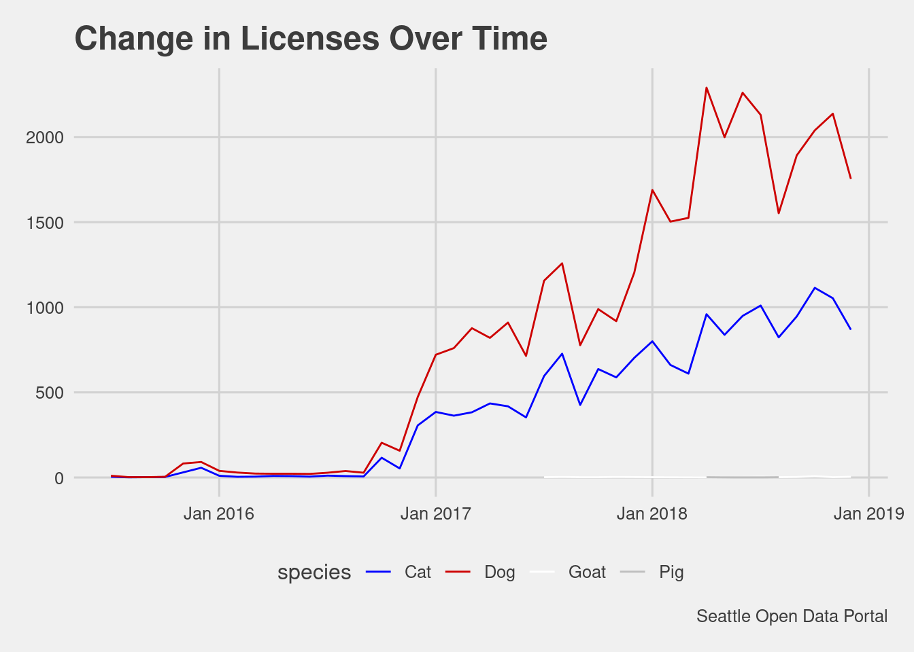
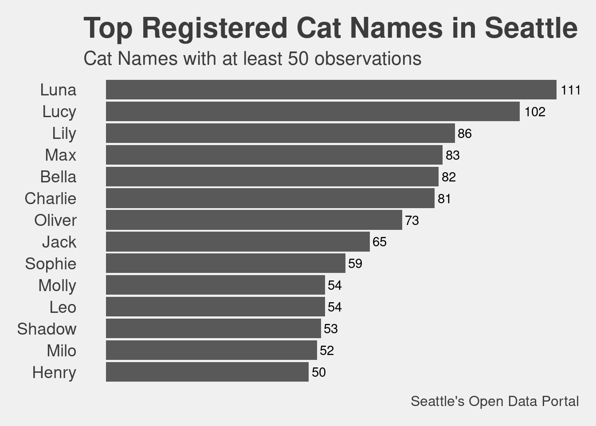
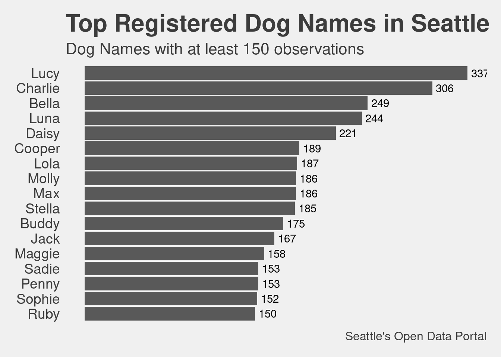

── Attaching packages ─────────────────────────────────────── tidyverse 1.3.2 ──
✔ ggplot2 3.3.6 ✔ purrr 0.3.4
✔ tibble 3.1.8 ✔ dplyr 1.0.9
✔ tidyr 1.2.0 ✔ stringr 1.4.0
✔ readr 2.1.2 ✔ forcats 0.5.1
── Conflicts ────────────────────────────────────────── tidyverse_conflicts() ──
✖ dplyr::filter() masks stats::filter()
✖ dplyr::lag() masks stats::lag()
Attaching package: 'zoo'
The following objects are masked from 'package:base':
as.Date, as.Date.numericIntroduction
The TidyTuesday project for March 27, 2019 consisted of Pet Registrations from Seattle. I had the good fortune to work with this data set prior on a Chromebook Data Science data visualization project.
Load Libraries
Read in the data
seattle_pets <- readr::read_csv("https://raw.githubusercontent.com/rfordatascience/tidytuesday/master/data/2019/2019-03-26/seattle_pets.csv")Rows: 52519 Columns: 7
── Column specification ────────────────────────────────────────────────────────
Delimiter: ","
chr (7): license_issue_date, license_number, animals_name, species, primary_...
ℹ Use `spec()` to retrieve the full column specification for this data.
ℹ Specify the column types or set `show_col_types = FALSE` to quiet this message.Explore the Data
dplyr::glimpse(seattle_pets)Rows: 52,519
Columns: 7
$ license_issue_date <chr> "November 16 2018", "November 11 2018", "November 2…
$ license_number <chr> "8002756", "S124529", "903793", "824666", "S119138"…
$ animals_name <chr> "Wall-E", "Andre", "Mac", "Melb", "Gingersnap", "Co…
$ species <chr> "Dog", "Dog", "Dog", "Cat", "Cat", "Dog", "Dog", "C…
$ primary_breed <chr> "Mixed Breed, Medium (up to 44 lbs fully grown)", "…
$ secondary_breed <chr> "Mix", "Dachshund, Standard Wire Haired", NA, NA, "…
$ zip_code <chr> "98108", "98117", "98136", "98117", "98144", "98103…Exploratory Graphs
From this graph we learn that there are many more dogs registered than cats.
seattle_pets %>%
ggplot(aes(x = species)) +
geom_bar()
This line chart proivdes the framework for a polished graph below. The code chunk below uses a one two punch with with lubridate and zoo to work with the dates.
## add date and ym columns
seattle_pets$date <- lubridate::mdy(seattle_pets$license_issue_date)
seattle_pets$ym <- zoo::as.yearmon(seattle_pets$date, "%y%m")
## how the number of licenses recorded has changed over time
seattle_pets %>%
## group by yearmonth (`ym`)
group_by(ym) %>%
## count number within each group
summarise(n=n()) %>%
ggplot(., aes(ym, n)) +
## geom name for line chart
geom_line() +
scale_x_yearmon() +
xlab("") +
ylab("Number of licenses")
Explanatory Graph
The data spans many years when there were no registrations or licences; I was able to use the filter function to emphasis that registrations were very limited prior to January 2017. In January 2017 you are able to observe the number of registrations increase from January 2017 and peaking in February 2018.
## add date and ym columns
seattle_pets$date <- lubridate::mdy(seattle_pets$license_issue_date)
seattle_pets$ym <- zoo::as.yearmon(seattle_pets$date, "%y%m")
## how the number of licenses recorded has changed over time
seattle_pets %>%
## group by yearmonth (`ym`)
filter(ym > "June 2015") %>%
group_by(ym) %>%
## count number within each group
count(species) %>%
ggplot(., aes(ym, n, group = species, color = species)) +
## geom name for line chart
geom_line() +
scale_x_yearmon() +
xlab("") +
ylab("Number of licenses") +
scale_colour_manual(values = c("blue","red3","white", "grey")) +
theme_fivethirtyeight() +
labs(title = "Change in Licenses Over Time") +
labs(caption = "Seattle Open Data Portal") 
Explanatory Bar Charts
The mutate statement here along with the reorder statement puts the bar graph in order. I saw another example where you can use reorder within the aes statement in ggplot2.
cat_p <- seattle_pets %>%
filter(species == "Cat", animals_name != "") %>%
group_by(animals_name) %>%
summarise(n = n()) %>%
filter(n >49) %>%
mutate(animals_name = reorder(animals_name, n)) %>%
ggplot(aes(x = animals_name, y =n)) +
geom_bar(stat="identity") +
coord_flip() +
theme_fivethirtyeight() +
theme (axis.text = element_text(size = 14),
title = element_text(size = 16),
legend.position="none",
plot.caption=element_text(size = 12),
panel.grid.major = element_blank(),
panel.grid.minor = element_blank(),
axis.text.x = element_blank() ) +
labs(title = "Top Registered Cat Names in Seattle") +
labs(subtitle = "Cat Names with at least 50 observations") +
labs(caption = "Seattle's Open Data Portal") +
ylab("Name Count") +
xlab("Cat Name")+
geom_text(aes(label = paste0(as.integer(n)),
x = animals_name,
y = n,
stat= "identity",
hjust = -0.2,
))Warning: Ignoring unknown aesthetics: statcat_p
dog_p <- seattle_pets %>%
filter(species == "Dog", animals_name != "") %>%
group_by(animals_name) %>%
summarise(n = n()) %>%
filter(n >149) %>%
mutate(animals_name = reorder(animals_name, n)) %>%
ggplot(aes(x = animals_name, y =n)) +
geom_bar(stat="identity") +
coord_flip() +
theme_fivethirtyeight() +
theme (axis.text = element_text(size = 14),
title = element_text(size = 16),
legend.position="none",
plot.caption=element_text(size = 12),
panel.grid.major = element_blank(),
panel.grid.minor = element_blank(),
axis.text.x = element_blank() ) +
labs(title = "Top Registered Dog Names in Seattle") +
labs(subtitle = "Dog Names with at least 150 observations") +
labs(caption = "Seattle's Open Data Portal") +
ylab("Name Count") +
xlab("Dog Name")+
geom_text(aes(label = paste0(as.integer(n)),
x = animals_name,
y = n,
stat= "identity",
hjust = -0.2,
))Warning: Ignoring unknown aesthetics: statdog_p
Conclusion
I played with the five_thirtyeight theme and it worked well. I think it would work better with some colors in the bar plot but I am not sure how I would want to color this graph.